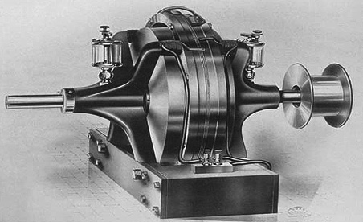

Alternating Currents
An electric current that reverses its direction many times a second at
regular intervals, typically used in power supplies. It caused a stir
at the 1893 World's Expo in Chicago, ignting the war of currents.

Fluorescent Bulbs
Of course he didn't invent light itself, but he did invent how light
can be harnessed and distributed. Tesla developed and used fluorescent
bulbs in his lab some 40 years before industry "invented" them.
X-Ray
Electromagnetic and ionizing radiation was heavily researched in the late 1800s, but Tesla researched the entire gamut. Everything from a precursor to Kirlian photography, which has the ability to document life force.
Radio
Guglielmo Marconi was initially credited, and most believe him to be the inventor of radio to this day. However, the Supreme Court overturned Marconi's patent in 1943, when it was proven that Tesla invented the radio years previous to Marconi.
Remote Control
This invention was a natural outcropping of radio. Patent No. 613809
was the first remote controlled model boat, demonstrated in 1898.
Utilizing several large batteries and radio signals controlled
switches.
Electric Motor
Tesla's invention of a motor with rotating magnetic fields could have freed mankind much sooner from the stranglehold of Big Oil. However, his invention in 1930 succumbed to the economic crisis and the world war that followed.
Tesla Coil
The Tesla Coil is certainly something that big industry would have liked to suppress: the concept that the Earth itself is a magnet that can generate electricity (electromagnetism) utilizing frequencies as a transmitter.
Wireless Communication
Tesla built a tower that would use the natural frequencies of our
universe to transmit data, including a wide range of information
communicated through images, voice messages, and text.